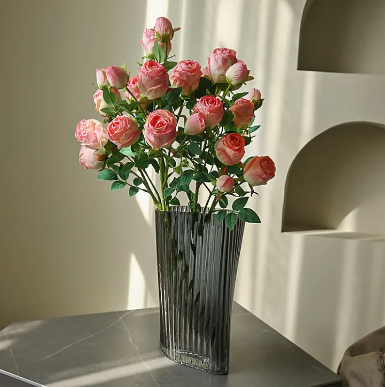
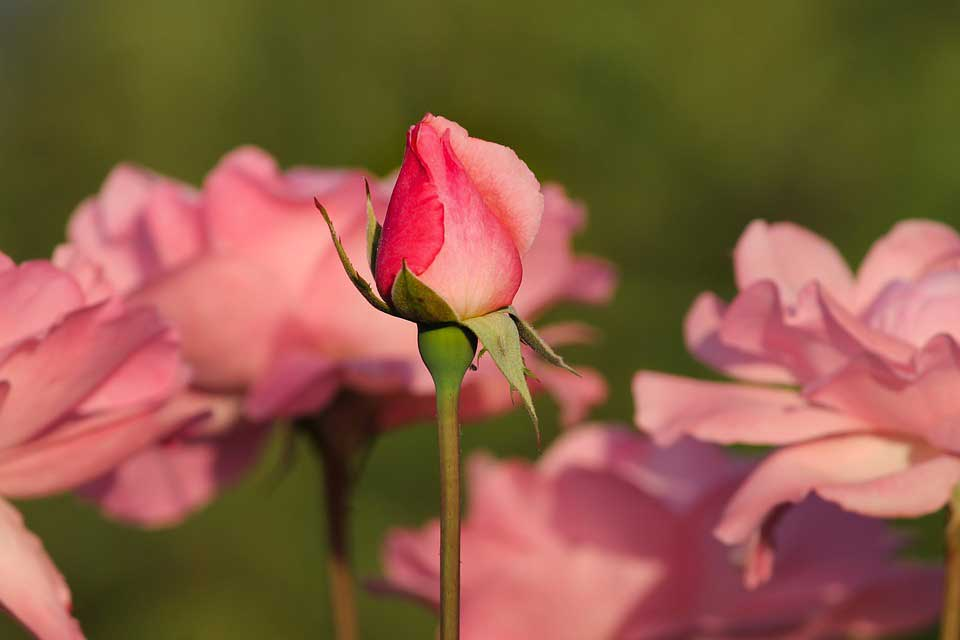

"Ingin menjadi programmer handal, namun enggan ngoding"
Mawar atau Ros (Rosa) adalah tumbuhan perdu, pohonnya berduri, bunganya berbau wangi dan berwarna indah, terdiri atas daun bunga yang bersusun
Meliputi ratusan jenis, tumbuh tegak atau memanjat, batangnya berduri, bunganya beraneka warna, seperti merah, putih, merah jambu , merah tua, dan berbau harum
Mawar liar terdiri dari 100 spesies lebih, kebanyakan tumbuh di belahan bumi utara yang berudara sejuk.
Tanaman mawar termasuk dalam family Rocaceae. Klasifikasi botani mawar adalah sebagai berikut :
Kingdom : Platae
Divisi : Spermatophyta
Sub Divisi : Angiospermae
Kelas : Dicotyledona
Ordo : Rosanales
Famili : Rosaceae
Upfamili : Rosoideae
Genus : Rosa
Bunga Mawar memiliki banyak manfaat, beberapa diantaranya yaitu:
- Bunga potong
- Hiasan rumah bisa dengan ditanam di pot
- Hiasan taman agar menjadi lebih indah
- Sebagai bahan industri kosmetik dan pewangi
- Sebagian Mawar ada yang dijadikan teh dan edible atau dapat dikonsumsi
- Memberikan aroma yang menyegarkan, sehingga bisa menenangkan saraf dan menghilangkan stres
1. Pilih pot yang sesuai
Cara merawat bunga mawar yang mudah dan sederhana untuk dilakukan adalah dengan memilih pot yang sesuai.
Ketika Anda ingin menanam bunga mawar di dalam pot, maka dengan memperhatikan ukuran dan jenis pot yang baik,
maka tanaman juga bisa tumbuh dengan baik dan tidak layu. Alangkah baiknya lagi, jika Anda menggunakan jenis pot yang terbuat dari tanah liat,
karena jenis wadah tanaman tersebut memiliki banyak pori yang bisa mengalirkan air dengan cepat.
Perlu dipahami bahwa tanaman bunga mawar tidak bisa hidup dengan intensitas air yang berlebiha,
oleh karena itu dapat memicu tanaman cepat rusak dan membusuk. Jangan biarkan air tergenang di dalam pot atau terlalu lembab,
yang bisa menghambat pertumbuhan mawar.
2. Pilih media tanam yang tepat
Cara merawat bunga mawar selanjutnya adalah memilih media tanam yang sesuai.
Ketika Anda sudah memilih pot untuk menanam mawar, maka dengan memilih media tanam yang tepat,
bisa Anda gunakan untuk mengisi wadah tersebut atau dibiarkan tumbuh tanpa pot.
Untuk tanaman hias bunga mawar membutuhkan media tanam yang tidak terlalu gempur namun tidak pula terlalu padat. Namun sebaliknya,
jika bukan tanaman hias sekalipun Anda harus memastikan media tanam yang akan digunakan.
3. Siram tanaman dengan teratur
Cara merawat bunga mawar selanjutnya setelah Anda memilih media tanam yang sesuai,
maka agar cepat berbunga Anda bisa mulai dari bagamana proses menyiramnya. Proses penyiraman air harus dilakukan secukupnya,
selain menjadi sumber kebutuhan utama bagi proses biologis tumbuhan, proses penyiraman berperan dalam mempercepat larutnya unsur hara
yang bisa diserap oleh akar bunga mawar, serta akan membantu dalam mengatur kondisi udara sekitarnya.
Siramlah tanaman secara teratur, pada pagi hari antara pukul 7-9 dan sore hari antara pukul 4-6.
Selalu perhatikan debit air yang digunakan, apalagi saat musim hujan ada baiknya proses penyiraman dikurangi intensitasnya.
4. Letakan tanaman pada tempat yang sesuai

Cara merawat bunga mawar juga perlu dimasukkan dalam vas bunga,
selanjutnya harus ditempatkan pada lokasi yang tepat. Hal ini karena bunga mawar yang sudah dipetik,
tidak bisa terpapar langsung oleh sinar matahari. Ketika paparan panas yang berlebihan, bisa membuat bunga mawar mudah layu.
Maka saat Anda melakukan pemotongan di dalam air, jika tangkai bunga yang dipetik terlalu panjang, bisa dipotong bagian ujung kira-kira 1 cm dengan cara menyerong.
5. Penyinaran yang cukup

Cara merawat bunga mawar selanjutnya yang bisa Anda lakukan adalah pastikan agar tanaman mendapatkan penyinaran yang cukup.
Bunga mawar juga membutuhkan sinar matahari dalam melakukan proses fotosintesis pertumbuhan mereka.
Oleh karena itu, sangat penting bagi Anda untuk mengamati penyinaran yang cukup, sehingga memperlancar proses fotosintesis bunga mawar untuk menghasilkan zat makanan.
6. Rutin memangkas batan dan daun
Cara merawat bunga mawar yang baik selain penyinaran yang cukup, maka langkah sekanjutnya adalah pangkas secara rutin daun dan batang
itu juga penting. Hingga kini masih banyak tanaman mawar yang tidak berkembang dengan baik, dikarenakan tidak memangkas daun dan batang bunga mawar
secara teratur. Tanaman bunga mawar yang terlalu banyak dahan, ranting dan daun biasanya pertumbuhan bunganya jadi lebih terlambat atau hanya
berbunga sedikit saja. Oleh sebab itu, harus dipangkas secara rutin agar tak menghambat proses pertumbuhan bunga
7. Berikan pupuk yang sesuai
Cara merawat bunga mawar selanjutnya tentu memberi pupuk yang sesuai, agar tanaman bisa semakin tumbuh subur.
Pupuk yang disarankan untuk tanaman ini, adalah pupuk kendang yang berasal dari kotoran hewan. Biasanya,
kotoran yang dipakai berasal dari sapi dan kambing. Namun jika Anda kesusahan menemukan kotoran sapi dan kambing,
maka Anda juga bisa memberikan pupuk kimia seperti NPK yang mengandung nitrogen untuk pertumbuhan vegetative seperti daun,
fosfor untuk pertumbuhan akar, pembungaan dan pembuahan.
8. Jaga dari serangan hama dan gulma
Cara merawat bunga mawar selanjutnya adalah selalu hindari dari serangan hama dan gulma. Langkahnya cukup mudah,
Anda bisa memperhatikan kebersihannya, karena serangga dan gulma atau tanaman liar disekitar tanaman bunga mawar dapat mengganggu pertumbuhannya.
Gulma bisa menyerap nutrisi baik yang seharusnya bisa memenuhi kebutuhan nutrisi dan makanan tanaman bunga mawar,
dengan sistem merusak struktur tanaman seperti tungau, kutu daun, dan siput.
9. Perawatan tanaman bunga mawar
Cara merawat bunga mawar agar tumbuh subur, cepat berbunga dan tak layu bisa dilakukan dengan perawatan secara berkala.
Anda harus mengganti air dalam vas bunga sebanyak 2 hari sekali, agar air kotor tidak diserap oleh tangkai bunga.
Selalu memotong tangkai secara berkala, menjaga kebersihan bunga mawar, memberikan penyinaran yang cukup sehingga bunga mawar dapat tumbuh subur.
Mawar merah adalah salah satu bunga yang paling banyak dibudidayakan di dunia.
Sebagian besar spesies yang dikenal sekarang berasal dari Asia. Dikenal sebagai bunga Asia,
karena sekitar 5.000 tahun yang lalu budidaya taman mawar dimulai di Cina.
Mawar merah melambangkan cinta dan romantisme. Selain itu, mawar merah juga mencerminkan penghormatan dan pengabdian yang mendalam.
Mawar putih adalah simbol kemurnian dan kedamaian. Mereka mengekspresikan perasaan tulus dan suci. Selain itu, mawar putih juga digunakan sebagai lambang simpati dalam situasi duka cita.
mawar pink atau merah muda terang melambangkan kebahagiaan, kelembutan, kekaguman, dan keanggunan. Selain itu, mawar pink juga memiliki arti yang sempurna untuk menyampaikan cinta dan persahabatan masa muda. Makna ini cukup mirip dengan warna lainnya, yaitu mawar merah dan putih.
Bunga mawar kuning dikenal sebagai lambang persahabatan atau pertemanan. mawar kuning hari ini memiliki arti persahabatan, kebahagiaan, kegembiraan, kepedulian, dan penghargaan. Tak heran, bunga mawar kuning lebih cocok diberikan pada seorang sahabat dan teman.